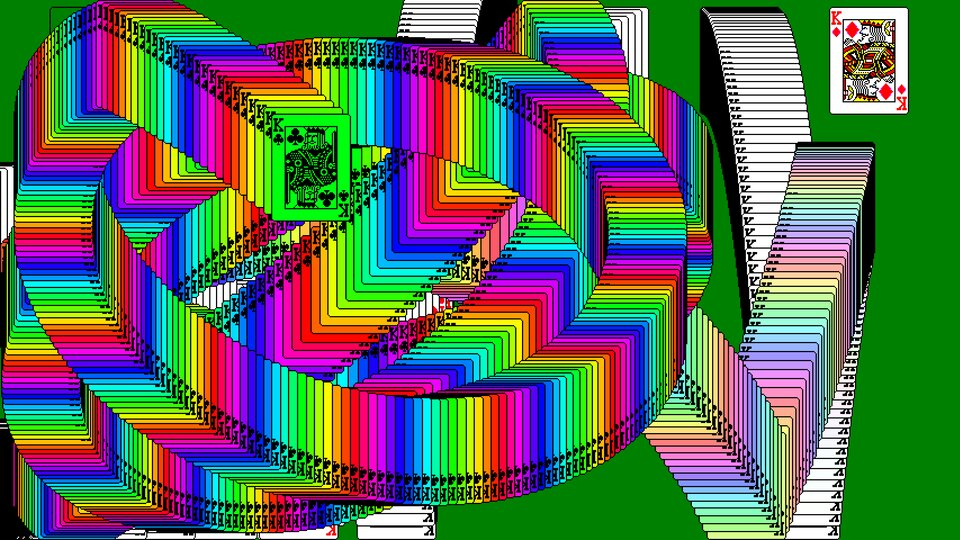
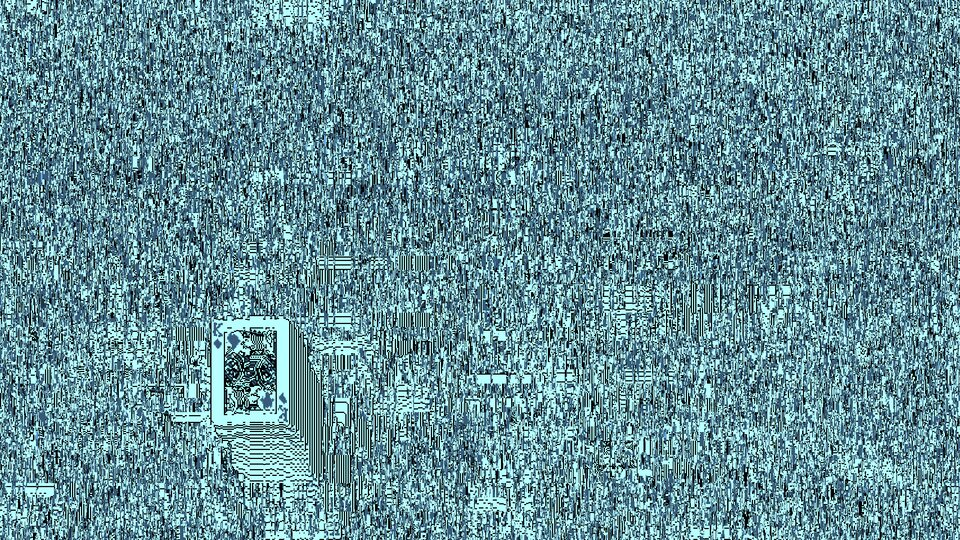
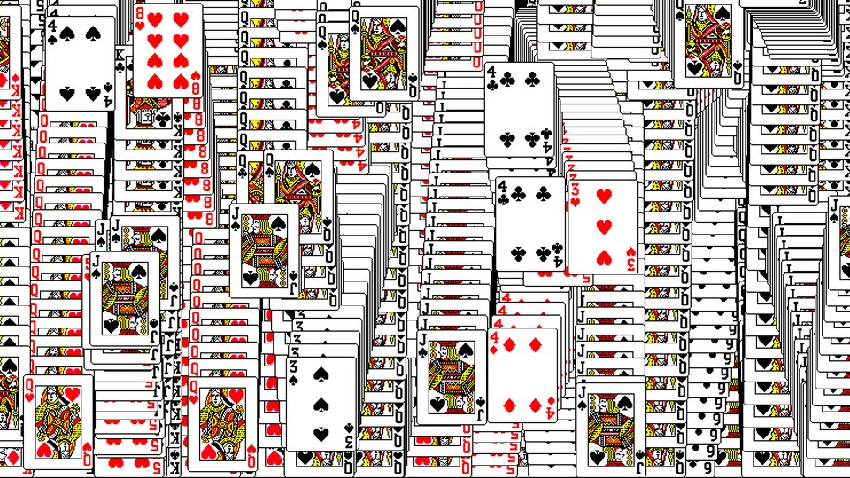

Solitaire Win effects
The Windows Solitaire win screen, faithful at first. After about a minute it starts to go wrong, gets steadily worse, then reboots and does it again. This page lists everything that can go wrong and how the effects pile up.

How it drifts
Everything hangs on one number, chaos, from 0 (the real win screen) to 1 (fully broken). It follows the clock, not chance.
- 0–45 sNothing goes wrong. A round of 52 cards takes about 100 seconds, so the first oddities land late in the first round.
- 45 s – 9 minChaos climbs along an S-curve: slow start, fast middle, slow finish. The ramp is 8 minutes by default (Options… changes it).
- RoundsWhen all 52 cards are gone, the foundations refill and the next round paints over the old trails. The screen is never cleared, except by a reboot.
- Every secondIf there is a free slot, there is a 3% + 50% × chaos² chance a new effect starts. That is 3% at the start and 53% at full chaos.
- Which oneA weighted draw among effects unlocked at the current chaos and not already running. Rare effects have about a twentieth of the usual weight.
- How hardStrength is random, scaled up with chaos. Durations stretch from 0.6× to 1.5× as chaos rises.
- Reboot2–10 minutes after reaching full chaos, the screen hangs for a second with tearing, wipes to felt, puts the kings back, and chaos drops to 0.2.
How effects stack
Up to 1 + ⌊3 × chaos⌋ effects run at once: one until chaos reaches 0.33, then two, three, and four at full chaos. The same effect never runs twice at once. Every frame, each running effect adjusts one shared set of settings in the order the effects started, so they combine instead of taking turns:
| Setting | Combines by | What you see |
|---|---|---|
| Speed of time | Multiplying | Slow motion × burst can land near normal speed. Rewind × burst runs backwards fast. A hang or a stutter's freeze makes it zero, whatever else runs. |
| Hue, colour split, scroll, wrong-card offset, stride | Adding | Two offsets push in the same direction further, or cancel. |
| Invert, upside down, mirror | Flipping | Negative + invert flash flashes back to normal. Upside down + mirror turns the screen 180°. |
| Palette, greyscale, phosphor, felt colour, tear, rainbow | Strongest wins | Greyscale with phosphor gives a clean one-colour monitor. CGA with phosphor crushes the tint to four colours. |
| Gravity, bounce, size | Each changes the result of the last | Sideways gravity then gravity flip points gravity up and to the side. Orbit cancels gravity, so zero g on top changes nothing. |
So the stacks are not designed combinations. They come out of random draws, and that leaves a lot of them:
| Chaos | Effects unlocked | Running at most | Different sets possible |
|---|
Each run also draws its own strength, duration and details (the orbit's centre, the phosphor colour, the stride width), so the same set rarely looks the same twice.
Roll a stack
This runs the same rules as the saver for a few random minutes at the chosen chaos, then shows what is running at that moment.




Every effect
Each picture is that effect on its own, a few seconds in. The time effects change speed, which a still cannot show; press 1 in the harness to see them. Rare marks six effects that each turn up only every half hour to an hour of full chaos. Together, one of them appears every few minutes.